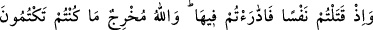
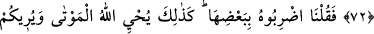
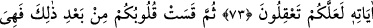
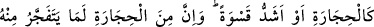
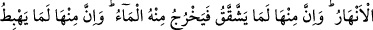
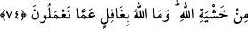
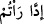
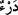
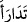
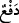
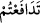

TAŞLARDAN ÖYLESİ VAR Kİ...
72. Hani siz bir adam öldürmüştünüz de onun hakkında birbirinizle atışmıştınız.
Halbuki Allah gizlemekte olduğunuzu ortaya çıkaracaktır.
73. “Haydi, şimdi (öldürülen) adama, (kesilen ineğin) bir parçasıyla vurun”
dedik. Böylece Allah ölüleri diriltir ve düşünesiniz diye size âyetlerini
(Peygamberine verdiği mûcizelerini) gösterir.
74. (Ne var ki) bunlardan sonra yine kalbleriniz katılaştı. Artık kalbleriniz taş gibi
yahut daha da katıdır. Çünkü taşlardan öylesi var ki, içinden ırmaklar kaynar.
Öylesi de var ki, çatlar da ondan su fışkırır. Taşlardan bir kısmı da Allah korkusuyla
yukardan aşağı yuvarlanır. Allah yapmakta olduklarınızdan gâfil değildir.
Âyetin “Hani siz birbirinizi öldürmüştünüz de” bölümü her ne kadar anlatılan
kıssanın sonunda gelmişse de, aslında mânâ itibarıyla kıssanın ön kısmını oluşturur.
Mânâ şöyle olur: Hani siz birisini öldürmüş de, Mûsâ’ya gelmiş ve ondan sizin için
Allah’a yalvarmasını istemiştiniz, Mûsâ da Allah’ın size şöyle şöyle emrettiğini
söylemişti: “Bu âyetin, lâfızları itibarıyla öne geçmemesinin sebebi, buradaki maksadın
sadece kâtili ortaya çıkarmak için, ineğin kesilmesidir. “Katl (öldürme) olayı âyette
atalarının yaptığını tasvîb ettikleri için Peygamber (a.s.) dönemindeki Yahûdîlere nisbet
edilmiştir. “Katl” olayı, onların içinde vuku bulduğu için fiil, (çoğul) olarak gelmiştir.
Âyetin mânâsı: Ey yahûdîler! Hani atalarınızın haksız yere, mâsûm şahsı öldürdüğü
vakti hatırlayın. Katledilen Âmil b. Şerâhîl idi. Birbirinizle onun kâtili hakkında
atışmıştınız. Buradaki (
)“atışmak” fiilinin aslı (
) masdarından ve (
)
fiilinden türemiştir. Bu da
(
) “savunmak” mânâsına gelir. (
) “savunmak”; tartışmak ve münâkaşa etmek,
demektir. Çünkü onlardan herbiri bunu kendisinin yapmadığını söylüyor ve suçu
diğerinin üzerine atıyordu.
Şüphesiz ki Allah, sizin yapıp da gizlediğiniz katl meselesini ortaya çıkaracak, onun
gizli kapaklı kalmasını önleyecektir.